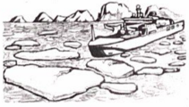

2019年北京市中考英语试题 · 阅读短文 第34、35、36、37、38题
四、阅读短文，根据短文内容回答问题．（共10分，每小题2分）
Huge Waves Destroying Arctic Ice Faster than Expected
Ice covers much of the Arctic Ocean（北冰洋）．Some pieces of ice are huge，like moving islands．As temperatures have increased，however，some of the ice has begun to disappear．Scientists have discovered huge waves（海浪）in the arctic waters．

The waves were discovered by accident in May，2010．Scientist Aleksey Marchenko and his students set out on a trip．They wanted to study the icy waters． On May 2，the ship traveled east and stopped next to a large chunk of ice．around 50 miles from the small island of Hopen．Marchenko prepared to lead his students out onto the Ice
"We were ready to go but when I went out，I discovered many cracks（裂缝）around，" he remembers．
He decided to move the ship deeper into the ice to keep safe．The farther in they went，he thought，the harder the ice would become．As they pushed forward，however，the ship experienced small waves，and then bigger ones．Soon，the waves broke up the ice around the ship into thousands of smaller pieces．
Within an hour，Marchenko and his team saw a wave that was about 13 feet high．The ship's navigation（航行）system finally recorded the largest waves．They were more than 20 feet in height．The waves were so strong that they forced huge pieces of ice to jump up and down，breaking the ice into smaller pieces within just one hour．Scientists had never imagined that the process could happen so fast．The waves in these areas used to be small．
The speed and force of the huge waves there makes it impossible to know in advance when they are coming．That could be dangerous for navigators and local communities who are unprepared for huge waves or depend on sea ice to protect them．Wildlife like polar bears and walruses that depend on sea ice to live is also in danger．
Some scientists think people will soon see even bigger waves in these icy waters．As waves break up ice，the seas will become more open，and the waves will get even stronger．There are stormy times ahead．
34．When did Marchenko and his students discover huge waves in the arcticwaters？
35．Why did Marchenko and his students set out on the trip？（ ）
36．What did Marchenko decide to do to keep safe？（ ）
37．How high were the largest waves recorded by the navigation system？（ ）
38．What is Paragraph 7 mainly about？（ ）
书面表达（共10分）